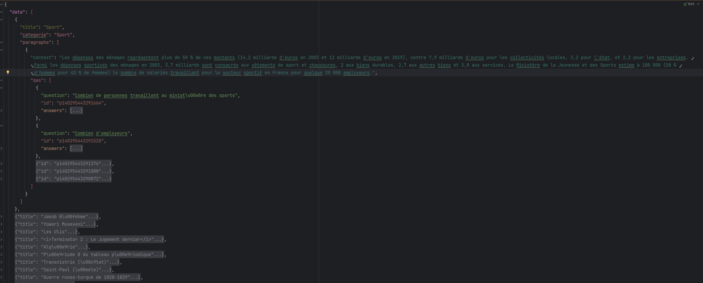
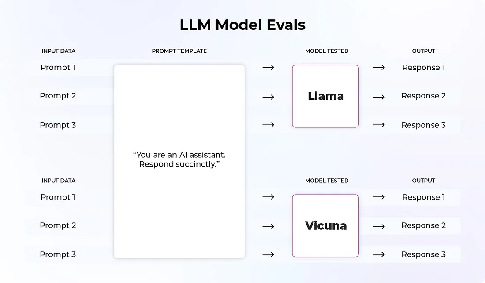
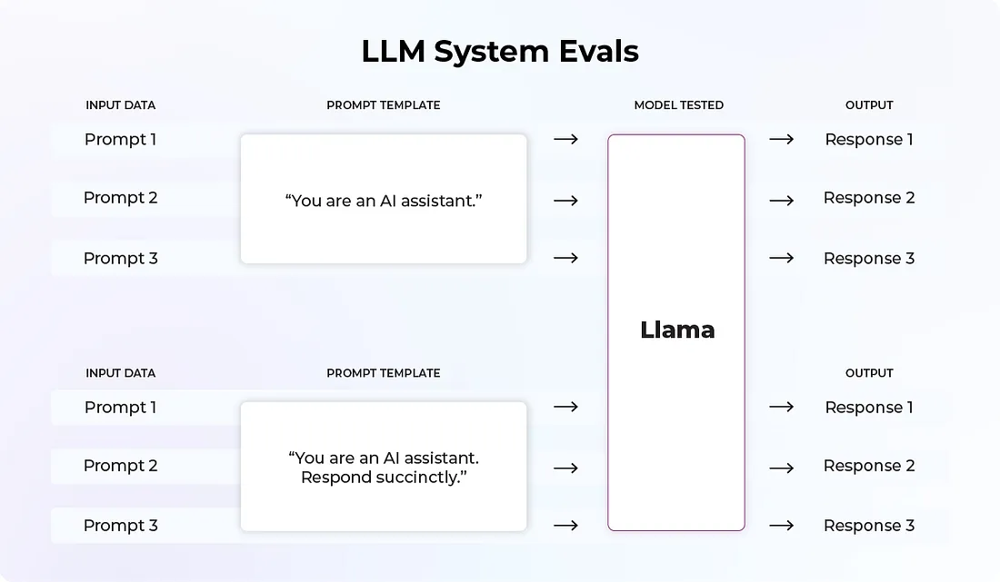
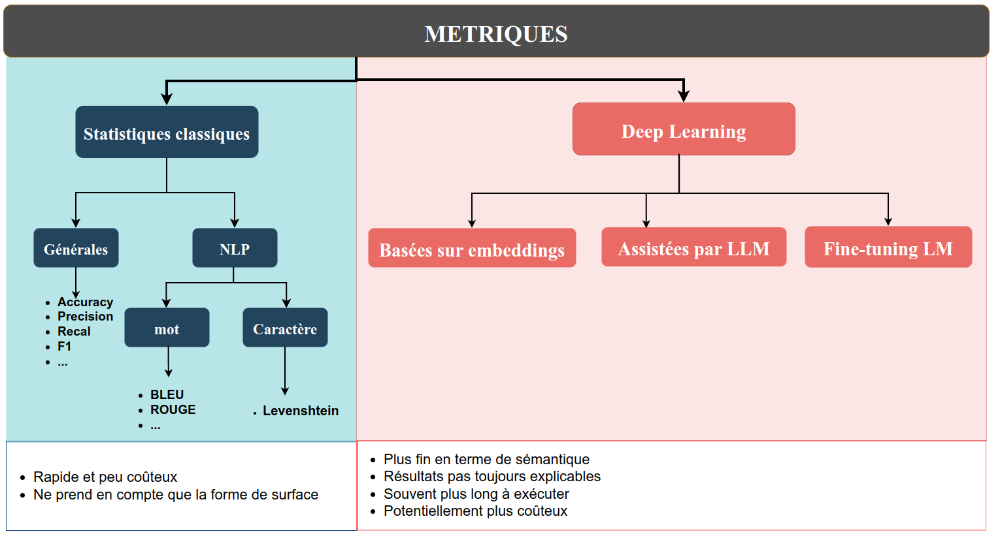
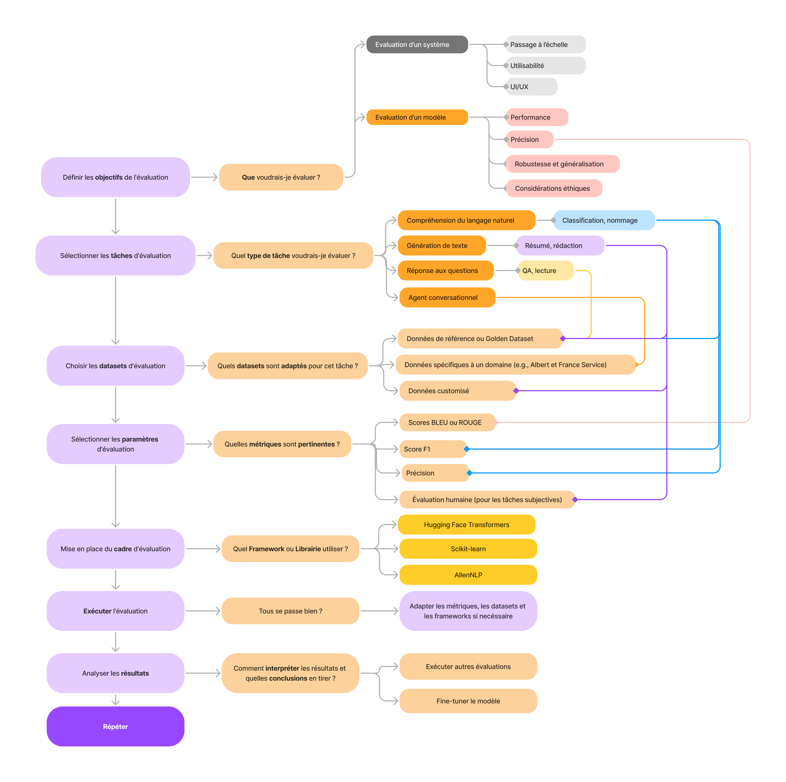

PARTIE II. Développements autour des LLMs (pour les data scientists)
IV. Évaluations d’un modèle
1. Objectif
Tous les LLM visent le même objectif : maîtriser le langage naturel et par là même, égaler l’humain dans des tâches telles que le résumé, la traduction, la reconnaissance des entités nommées, etc.
Cependant, tous les LLM souffrent des mêmes défauts, de façon plus ou moins prononcée:
* Très grande sensibilité du modèle au prompt utilisé
* Les affirmations produites par les LLM ne sont pas toujours factuellement correctes (on parle d'hallucinations)
* Les LLM peuvent avoir des comportements inattendus et dangereux suite à l'usage de prompts malveillants, de données
d'entraînement biaisées, au recours à des agents trop permissifs, etc.On souhaite donc se doter d’un cadre de comparaison qui permette d’affirmer que tel LLM est plus performant ou plus fiable que tel autre. On devra recourir à différentes métriques pour mesurer differents aspects du problème (fiabilité, sécurité, absence de biais…)
Si de nombreux bancs d’essai existent aujourd’hui, permettant de distinguer certains LLM, il ne faut pas oublier que de bonnes performances dans un banc d’essai ne sont pas suffisantes, et qu’il est primordial de mettre en place un système d’évaluation quasi temps réél du LLM une fois en production.
2. Quelques concepts à connaître
a) Scenario
Un scénario est un ensemble de conditions dans lesquelles la performance du LLM est évaluée. Il s’agit par exemple de
- Réponse aux questions
- Raisonnement
- Traduction
- Génération de texte
- …
b) Tâche
Une tâche constitue une forme plus granulaire d’un scénario. Elle conditionne plus spécifiquement sur quelle base le LLM est évalué. Une tâche peut être une composition de plusieurs sous-tâches.
- Combinaisons de sous-tâches de difficulté variée
Par exemple, l’arithmétique peut être considérée comme une tâche constituée des sous-tâches arithmétique niveau 1er degré, arithmétique niveau collège, arithmétique niveau lycée, etc.
- Combinaison de sous-tâche de domaines variés
La tâche de type QCM peut être vue comme la combinaison de QCM histoire, QCM anglais, QCM logique, etc.
c) Métrique
Une métrique est une mesure qualitative utilisée pour évaluer la performance d’un modèle de langage dans certaines tâches/scénarios. Une métrique peut être :
- une fonction statistique/mathématique déterministe simple (par exemple, précision ou rappel)
- un score produit par un réseau neuronal ou un modèle de Machine Learning (ex. : score BERT)
- un score généré à l’aide d’un LLM (ex. : G-Eval)
Notons que dans le dernier cas, évaluer un LLM à l’aide d’un LLM peut donner l’impression du serpent qui se mord la queue. Cependant, ce type de ‘dépendances circulaires’ existe couramment et est bien acceptée dans d’autres dommaines. Lors d’un entretien d’embauche par exemple, l’intellect humain évalue le potentiel d’un autre être humain.
d) Benchmarks
Les benchmarks sont des collections standardisées de tests utilisées pour évaluer les LLM sur une tâche ou un scénario donné. On trouvera par exemple :
- SQuAD pour le scénario de réponse aux questions de l’utilisateur à partir d’extraction de parties d’un corpus (En anglais)
- PIAF semblable à SQuAD mais en français
- IMDB pour l’analyse des sentiments
- …
A titre d’exemple, l’image ci-dessous présente le corpus PIAF. Il est composé de paragraphes issus d’articles de Wikipedia, et d’une liste de questions portant sur ces paragraphes.

3 Datasets
Les performances des modèles peuvent être évaluées qu’en comparaison avec les connaissances existantes. Pour ce faire, il est nécessaire de disposer d’ensembles de données de référence dont les résultats sont connus et vérifiés. Au cours des dernières années, de tels ensembles de données ont été collectés pour un certain nombre d’applications. Pour évaluer les LLM, il existe des “benchmark datasets” qui peuvent être utilisés pour entraîner et pour tester des modèles.
- CoQA (Conversational Question Answering) est un set de données avec plus de 127 000 questions-réponses dans 7 domaines sont 5 sont publiques. https://stanfordnlp.github.io/coqa/ Pour évaluer votre modèle, il suffit de lancer ce script
python evaluate-v1.0.py --data-file <chemin_vers_dev-v1.0.json> --pred-file <chemin_vers_predictions>- GLUE (General Language Understanding Evaluation) https://gluebenchmark.com/ et SuperGLUE** https://super.gluebenchmark.com/ sont des collections des tâches pour évaluer la compréhension du langage naturel.
jiantest un PyTorch toolkit qui permet faire cette évaluation. Installez avecpip:
pip install jiantIci, un exemple d’affinage du modèle RoBERTa sur les données MRPC :
from jiant.proj.simple import runscript as run
import jiant.scripts.download_data.runscript as downloader
EXP_DIR = "/path/to/exp"
# Télécharger les données
downloader.download_data(["mrpc"], f"{EXP_DIR}/tasks")
# Configurer les arguments pour l'API simple
args = run.RunConfiguration(
run_name="simple",
exp_dir=EXP_DIR,
data_dir=f"{EXP_DIR}/tasks",
hf_pretrained_model_name_or_path="roberta-base",
tasks="mrpc",
train_batch_size=16,
num_train_epochs=3
)
# Lancer
run.run_simple(args)- SQuAD (Stanford Question Answering Dataset) est un set de données pour évaluer la compréhension de la lecture. Il est constitué des questions basées sur un ensemble d’articles de Wikipédia avec 100000 questions avec des réponses, et 50000 questions qui ne peuvent pas être répondues. Les modèles doivent Pour évaluer votre modèle, il suffit de lancer ce script
python evaluate-v2.0.py <chemin_vers_dev-v2.0> <chemin_vers_predictions>Plus d’informations sur Git : https://github.com/nyu-mll/jiant
4 Evaluation de modèles LLM vs. Evaluation de systèmes LLM
L’expression évaluation de LLM peut recouvrir différentes pratiques et différents objectifs. On doit ainsi distinguer l’évaluations de modèles LLM de l’évaluations de systèmes LLM. Les évaluations de modèles LLM s’intéressent aux performances globales. Les entreprises/centres de recherche qui lance leurs LLM ont besoin de quantifier leur efficacité sur un ensemble de tâches différentes.
Il existe de nombreux benchmarks qui permettent d’illustrer les performances des modèles sur des aspects précis, comme HellaSwag (qui évalue la capacité d’un LLM à compléter une phrase et faire preuve de bon sens), TruthfulQA (qui mesure la véracité des réponses du modèle) et MMLU (qui mesure la capacité de compréhension et de résolution de problèmes ).

(Source https://towardsdatascience.com/llm-evals-setup-and-the-metrics-that-matter-2cc27e8e35f3)
L’évaluation de systèmes LLM couvre l’évaluation de tous les composants de la chaîne, pour un modèle donné. En effet, un modèle de LLM est rarement utilisé seul. A minima, il faut lui fournir un prompt, et celui-ci aura un fort impact sur le résultat du modèle. On pourra s’intéresser par exemple à l’effet du prompt sur la politesse de la réponse, le style, le niveau de détail, etc. Un modèle peut également recevoir un contexte (ensemble de documents, tableaux, images…) et son influence doit également être mesurée. On pourrait par exemple s’apercevoir que le modèle produit des résumés de qualité quand on lui fournit des documents littéraires, mais pas des documents techniques.

(Source https://towardsdatascience.com/llm-evals-setup-and-the-metrics-that-matter-2cc27e8e35f3)
En pratique, la comparaison des modèles sur des benchmarks est réalisée par les grands fournisseurs de LLM (OpenAI, Facebook, Google, etc) ou par la communauté universitaire. L’évaluation de modèle reste cependant intéressante pour mesurer le gain de performance apporté par un fine-tuning sur un corpus interne par exemple. Cependant, ce sont les évaluations de systèmes LLM qui intéresseront la majorité des équipes souhaitant déployer un LLM dans leur administration.
4.1 Détails des métriques utilisées pour l’évaluation de modèles
Il n’existe pas de réponse simple à la question de savoir quelles métriques utiliser pour évaluer son système LLM. Cela dépendra du type de tâche, de la population cible, de la nature des données, des ressources materielles disponibles, etc Traditionnellement, dans le domaine de l’apprentissage machine, on évalue un modèle en se dotant d’un ensemble annoté d’entrées/sorties attendues, et on compare ensuite la distance entre la sortie obtenue et la sortie attendue. Dans le cas de la classification, on peut par exemple mesurer le taux de bonnes réponses.
La difficulté de l’évaluation en IA générative réside dans le fait que nous ne disposons généralement pas de valeur de référence à laquelle comparer la sortie du modèle. Même dans les cas où l’on disposerait d’un exemple de bonne réponse, les données de sortie étant non structurées (texte en language naturel), il est difficile de comparer la distance entre deux objets.
On reprend ici l’idée de classer les métriques en fonction de leur approche du problème, c’est à dire selon la façon dont elles évaluent la pertinence de la réponse obtenue. Certaines techniques supposent que l’on dispose d’une réponse de référence, et la question est alors de savoir comment elles évaluent la distance entre la réponse obtenue et une réponse de référence. D’autres techniques plus récentes ne font pas cette hypothèse, et cherchent à évaluer la qualité de la réponse dans l’absolu. 
On ne détaillera pas toutes les métriques dans le cadre de ce guide, il existe pléthore de documentation disponible sur le sujet (cf. Bibliographie en fin de guide). L’objectif ici est plutôt de fournir une grille d’analyse.
Métriques traditionnelles du machine learning
Dans les métriques classiques, on trouve des métriques générales de classification qui sont couramment utilisées en apprentissage machine et ne sont pas propres aux données textuelles (Accuracy, Precision, Recall, F1…). Ces métriques restent pertinentes pour certaines tâches confiées aux LLM, typiquement l’extraction d’entités nommées. Parmi les classiques, il existe également des métriques spécifiques au texte, qui reposent sur le principe du recouvrement maximal entre les phrases prédites et les phrases de référence. Le recouvrement peut être calculé au niveau des mots, ou au niveau des lettres. Ces méthodes ont été critiquées pour leur faible corrélation avec le jugement humain, ce qui est n’est pas étonnant dans la mesure où elles ne s’intéressent qu’a la forme de surface du texte.
Introduction de critères sémantiques
Les métriques basées sur le Deep Learning permettent de palier ce problème en introduisant des critères sémantiques. On distingue en premier lieu les métriques qui ont besoin d’une valeur de référence et les autres.
Détenir une valeur de référence peut représenter une grosse contrainte. Tout d’abord, ce n’est pas toujours pertinent; si on demande au LLM d’écrire un poème sur la mer par exemple, il serait vain de chercher à le comparer à un autre poème. Deuxièmement, les textes de références ne sont pas toujours de meilleure qualité que les textes générés par des LLM. Dans le cas du résumé automatique par exemple, [Fabbri, 2020] illustre les problèmes du dataset CNN/DailyMail [Hermann, 2015] dans lequel les résumés de référence sont pollués par des références et click-baits vers d’autres articles, ou souffrent d’un manque de cohérence suite à la concaténation de résumés sous forme de liste à puces. Ces résumés, évalués par des annotateurs humains, obtiennent parfois de moins bons scores que des résumés générés par LLM. Enfin, même si l’on dispose de références de qualité, il faut s’assurer que la distribution des documents est la même que celle qui sera utilisée en production. Si l’on entraîne un modèle à résumer des articles de presse par exemple, il ne sera pas nécessairement performants sur des documents d’une autre nature. Dès lors se pose la question de comment constituer un dataset d’évaluation pour un modèle de résumé à vocation généraliste.
Toujours est-il que si l’on dispose de valeurs de référence, on peut recourir à des métriques basés sur les embeddings ou des métriques basées sur des modèles fine-tunés.
Les métriques qui calculent la distance entre embeddings sont parmi les moins fines, mais leur faible complexité peut les rendre intéressantes. Elles exigent toutes des réponse de référence. On peut citer BERTScore ou MoverScore.
Les métriques basées sur des LLM utilisent un LLM qui joue le rôle de juge pour évaluer les sorties d’un LLM. Elles peuvent fonctionner avec ou sans références, selon des modalités variées (scoring, ranking, classification, réponse à des question fermées, etc.) Ces techniques nécessitent en général de décrire:
- la tâche confiée au LLM initial (résumé, traduction, …)
- les aspects à évaluer (fluidité, factualité, citation des sources…)
- eventuellement, les étapes de raisonnement permettant de déterminer le respect des critères
- donner quelques exemples
Ces méthodes sont aujourd’hui à l’état de l’art pour l’évaluation des LLM, si tant est que l’on utilise des LLM propriétaires comme juge (Constat valable pour le français du moins). L’inconvénient est qu’elles peuvent vite devenir coûteuses, et que le résultat n’est pas forcément reproductible.
Si notre use case n’est pas compatible avec l’usage d’un LLM propriétaire, on peut alors recourir aux métriques basées sur le fine-tuning de LLM de taille moyenne, open-source. Il peut être nécessaire de fine-tuner encore les modèles sur vos propres corpus. De plus, certains de ces modèles ne sont capables de répondre qu’à la question pour laquelle ils ont été entraînés. Par exemple, le modèle Lynx (Patronus AI ) est entraîné à détecter les hallucinations dans les environnements RAG. À partir d’un document, d’une question et d’une réponse, le modèle tente d’évaluer si la réponse est fidèle au document. En revanche, il ne peut se prononcer sur d’autres aspects. Le modèle Prometheus-Eval (LG AI Research, KAIST AI) est lui capable de répondre à des questions sur différents aspects, tant que l’utilisateur les définit explicitement dans le prompt.
```code python
rubric_data = { “criteria”:“Is the model proficient in applying empathy and emotional intelligence to its responses when the user conveys emotions or faces challenging circumstances?”, “score1_description”:“The model neglects to identify or react to the emotional tone of user inputs, giving responses that are unfitting or emotionally insensitive.”, “score2_description”:“The model intermittently acknowledges emotional context but often responds without sufficient empathy or emotional understanding.”, “score3_description”:“The model typically identifies emotional context and attempts to answer with empathy, yet the responses might sometimes miss the point or lack emotional profundity.”, “score4_description”:“The model consistently identifies and reacts suitably to emotional context, providing empathetic responses. Nonetheless, there may still be sporadic oversights or deficiencies in emotional depth.”, “score5_description”:“The model excels in identifying emotional context and persistently offers empathetic, emotionally aware responses that demonstrate a profound comprehension of the user’s emotions or situation.” }
```
QAG (Question Answer Generation) Score est un évaluateur qui exploite les forte capacités de raisonnement des LLM pour évaluer de manière fiable les résultats des LLM. Ici, on utilise les réponses à des questions fermées (générées ou prédéfinies) pour calculer un score final. Cette approche est relativement fiable parce qu’elle n’utilise pas les LLM pour générer directement les scores. Par exemple, si vous voulez calculer un score de fidélité (qui mesure si une sortie du LLM a été hallucinée ou non), vous devez :
* Utiliser un LLM pour extraire toutes les affirmations faites dans une sortie LLM. * Convertir ces affirmations en question. * Pour chaque question, demandez au LLM si la réponse de référence concorde avec l’affirmation faite.
En novembre 2024, on constate néanmoins que les LLM open-source ne sont pas encore assez puissants pour mener à bien la tâche de découpage du texte en affirmations élémentaires. Si les données à évaluer ne sont pas sensibles, nous conseillons, pour l’heure, de privilégier un LLM propriétaire.
4.2 Détails des métriques utilisées pour l’évaluation de systèmes
| Catégorie | Métriques | Détails |
|---|---|---|
| Métriques d’engagement des utilisateurs et généralités | ||
| Visité | Nombre d’utilisateurs qui ont visité l’application | |
| Soumis | Nombre d’utilisateurs qui soumettent des messages | |
| Répondu | Le LLM génère des réponses sans erreurs | |
| Vu | L’utilisateur consulte les réponses du LLM | |
| Clics | L’utilisateur clique sur la documentation référencée dans la réponse du LLM, le cas échéant | |
| Interaction avec l’utilisateur | ||
| Taux d’acceptation | Fréquence d’acceptation des réponses du LLM par l’utilisateur | |
| Conversation LLM | Nombre moyen de conversations LLM par utilisateur | |
| Jours d’activité | Nombre de jours actifs d’utilisation du LLM (par utilisateur) | |
| Timing | Durée moyenne entre les prompts et les réponses, et temps consacré à chacune | |
| Feedback utilisateur et rétention | ||
| Feedback utilisateur | Nombre de réponses avec des commentaires positifs ou négatifs | |
| Utilisateurs actifs par période | Nombre d’utilisateurs ayant visité l’application LLM au cours d’une période donnée | |
| Taux de retour | Pourcentage d’utilisateurs qui ont utilisé cette fonction la semaine/mois précédente et qui continuent à l’utiliser cette semaine/mois. | |
| Performance | ||
| Requêtes par seconde (Concurrence) | ||
| Tokens par seconde | Compte les tokens générés par seconde lors de la diffusion de la réponse LLM. | |
| Délai avant le premier rendu de jeton | ||
| Taux d’erreur | Taux d’erreur pour différents types d’erreurs tels que l’erreur 401, l’erreur 429. | |
| Fiabilité | Le pourcentage de demandes satisfaites par rapport au nombre total de demandes, y compris celles qui comportent des erreurs ou des échecs. | |
| Latence | Durée moyenne du temps de traitement entre la soumission d’une requête et la réception d’une réponse. | |
| utilisation GPU/CPU | Utilisation en termes de nombre total de tokens et nombre de code erreur 429 reçus (‘Rate limit reached for requests’ dans l’API OpenAI) | |
| Coûts | ||
| Coût des appels LLM | Ce qui est facturé par le fournisseur du LLM si vous passez par un LLM hebergé par un tiers | |
| Coût de l’infrastucture | Coût du stockage, énergie, si vous hébergez votre LLM | |
| Coût opérationnel | Coût de la maintenance, du monitoring, de la mise en place des mesures de sécurité, du support, etc si vous hébergez votre LLM |
5 Librairies et Frameworks
A ce jour, il existe des nombreux outils et librairies pour effectuer l’évaluation des modèles LLM. Chaque de ces librairies et frameworks est taillée pour une utilisation de modèle concrète avec des exemples pour vous aider à démarrer l’évaluation de votre modèle.
Hugging Face Transformers fournissent des API et des outils pour évaluer des modèles pré-entraînés sur différentes tâches en utilisant des métriques telles que la précision, le score F1 ou encore le score BLEU. Ils prennent en charge aussi l’intégration les données de la bibliothèque Hugging Face Datasets. https://huggingface.co/docs/transformers/index
Scikit-learn, c’est un projet Open source avec des librairies principalement axées sur l’apprentissage automatique traditionnel. Elle comprend de nombreux outils de métriques et utilitaires qui peuvent être utilisés pour évaluer les modèles de langage. https://scikit-learn.org/stable/
EvalML est une bibliothèque spécifique pour l’évaluation des modèles d’apprentissage automatique, y compris les LLM. Elle fournit des métriques, des visualisations et des outils de sélection de modèles. https://evalml.alteryx.com/en/stable/
NLTK et SpaCy - ces deux bibliothèques offrent des fonctionnalités pour le traitement du langage naturel et incluent des métriques pour évaluer des tâches telles que la tokenisation, l’analyse syntaxique et l’analyse des sentiments. https://www.nltk.org/ https://spacy.io/
AllenNLP est une bibliothèque conçue pour construire et évaluer des modèles de NLP. Elle fournit des outils pour faciliter la mise en œuvre de mesures d’évaluation et de visualisation personnalisées. https://docs.allennlp.org/models/main/
Transformers-Interpret Une bibliothèque qui se concentre sur l’interprétabilité des modèles, permettant de mieux comprendre les prédictions et les performances des modèles. https://pypi.org/project/transformers-interpret/0.3.0/
LangChain est principalement destinée à la construction d’applications avec des LLM. Elle comprend des outils d’évaluation pour évaluer la performance des modèles de langage dans le contexte. https://www.langchain.com/
OpenAI Evals est une boîte à outils d’évaluation de l’OpenAI qui fournit les outils et lignes directrices pour évaluer la performance et la sécurité de leurs modèles. https://github.com/openai/evals
Autres sources : …
6 Méthodologie
Un arbre de décision pour l’évaluation des LLM peut vous aider à guider votre processus d’évaluation en fonction de critères et d’objectifs spécifiques de votre modèle et son évaluation. Voici un exemple de tel arbre de décision qui pourrait vous aider en cas de doute. v1 